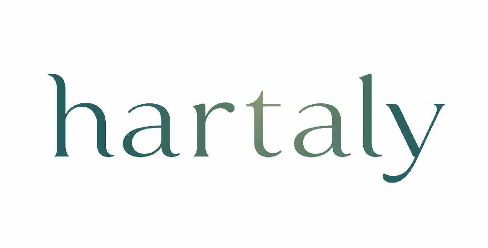

Hormuz Logistics Shift: Strategic Telemetry Confirmed.
SOURCE: Sovereign Defense Nodes
Satellite telemetry confirms a coordinated shift in maritime logistics in the Hormuz strait. Autonomous DID protocols are now active across all primary sovereign trade corridors.